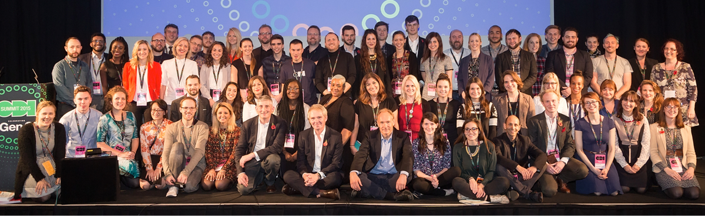

We connect, equip and inspire people around the world to innovate with data

The ODI Team, November 2015. Photographer: Paul Clarke.
Our focus
We focus on sector themes to bring open data’s benefits to specific areas of society and industry across the Data Spectrum
These sectors are:
What we do
We train, nurture and collaborate with individuals around the world to promote innovation through open data. We do this through:
- Open data training courses – the biggest offer in the world
- Membership – bringing together a network of individuals and organisations
- Events – from free lunchtime lectures to annual summits
- Tools, standards and techniques – our Labs team works with partners, universities and clients to evolve state-of-the-art tools, standards, and techniques in open data for the benefit of all
- Startups – we aim to find, support and promote open data startups
- Research – we research a broad range of areas related to open data
- Certify – our vision is to certify all open data to maximise reuse and unlock its value
- Nodes – operating at a city or regional level, our nodes commit their local expertise
- Public consultations – the ODI provides input to policy consultations and debates
About open data
Open data has proven benefits for our economies and citizens. The Shakespeare Review identified £6.8bn of total value in UK public sector data, a report in 2011 estimated that the EU market for public sector data would grow to €40bn per year, while McKinsey estimated a global market powered by open data from all sectors would create an additional $3tn and $5tn a year.
The Open Data Institute has identified open data-driven UK companies with a combined annual turnover of over £92bn employing over 500,000 people. Transport for London alone has identified a 58:1 return on investment by releasing transport data, in the process helping create global leaders such as Citymapper. Denmark has seen a 70:1 return on investment by choosing to publish address data openly. In the US, an open data company has sold for $930m and Landsat data create savings of $350m to $436m per year, while at least 84% of American smartphone owners use an application powered by open data every single day.
Background
Founded by Sirs Tim Berners-Lee and Nigel Shadbolt, the ODI is an independent, non-profit, non-partisan, limited by guarantee company.
The ODI has secured £10m over five years from the UK Government (via the UK innovation agency, Innovate UK), and $4.75m from Omidyar Network, and is working towards long-term sustainability through match funding and direct revenue.
With global reach, hundreds of members, thousands of people trained, dozens of startups incubated, and a 5,000 sq ft convening space based in the heart of London's thriving Shoreditch area, we invite everyone interested in developing open data to get in touch.
We openly publish our performance data.
Original plans
The following documents are provided for historical reference.